Obra Real
ImpoAcuatiq es el importador y distribuidor oficial exclusivo en Argentina de la tecnología y revestimientos Ingeprex (Chile). Abastecimiento mayorista directo de fábrica en cuarzo continuo Súper Brite®, puentes de adherencia Súper Kote® y terminaciones atérmicas con más de 10 años de vida útil garantizada.
Línea completa de revestimientos y soluciones cementicias fabricadas por Ingeprex (Chile) e importadas directamente por ImpoAcuatiq para constructoras, corralones y profesionales de todo el país.
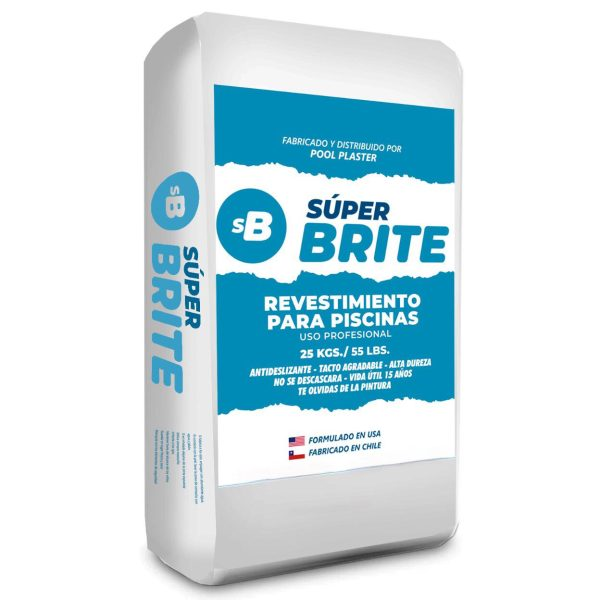
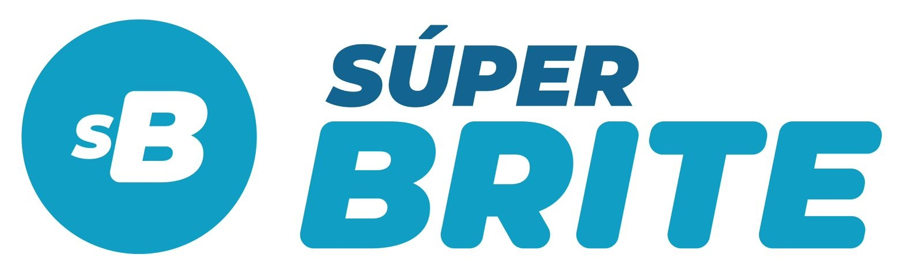
Revestimiento PiscinasRevestimiento continuo a base de cristales de cuarzo refinados y polímeros. Sella el vaso de hormigón eliminando filtraciones y la necesidad de repintado anual.
| Presentación | Bolsa de 22.7 kg / 25 kg uso profesional |
| Rendimiento | 2.5 m² por bolsa (espesor 8 - 10 mm) |
| Durabilidad Estimada | Superior a 10 - 15 años sin decolorar |
| Propiedades | Antideslizante, suave al tacto, inmune a cloro y sal |
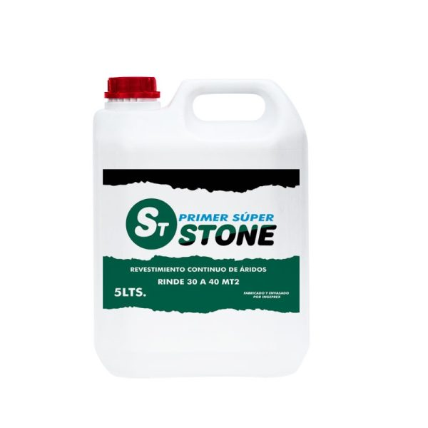
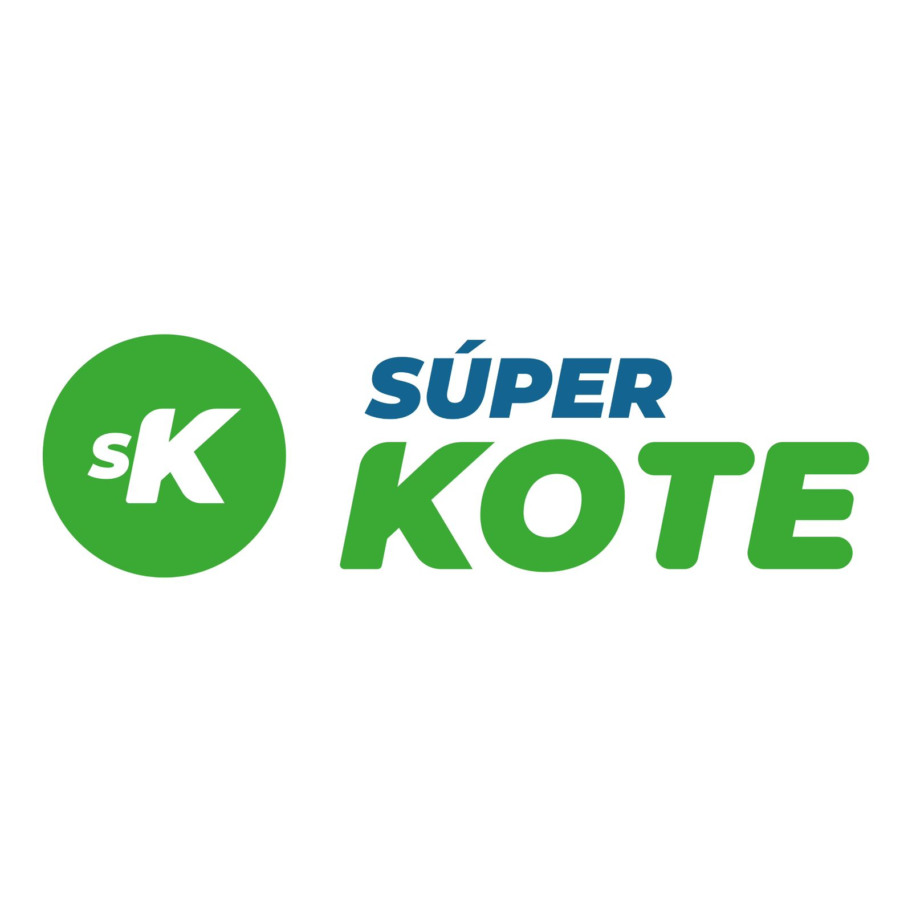
Puente de Unión EstructuralPuente de adherencia bicomponente (polvo + resina) de anclaje químico superior. Permite revestir sobre hormigón existente, cerámicas o pintura firme sin picar la pared.
| Presentación | Kit Bicomponente (Bolsa de Polvo + Bidón Resina) |
| Rendimiento | 15 m² a 20 m² por kit completo |
| Adherencia | Tracción directa > 1.5 MPa sobre hormigón |
| Tiempo de Trabajo | Secado rápido (recubrible en 4 - 6 horas) |
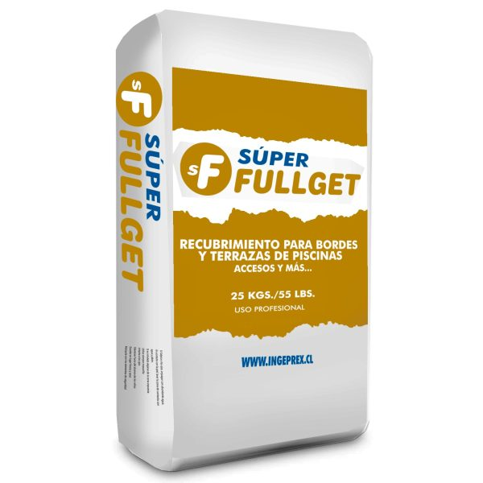
Revestimiento continuo de grano seleccionado para soláriums, bordes de piscinas y terrazas. 100% atérmico (no quema al sol) y antideslizante.
| Presentación | Bolsa 25 kg granulometría calibrada |
| Rendimiento | 3.0 m² por bolsa (espesor 10 - 12 mm) |
| Terminación | Grano visto lavado, atérmico certificado |
| Uso Principal | Solárium, playa húmeda, veredas perimetrales |
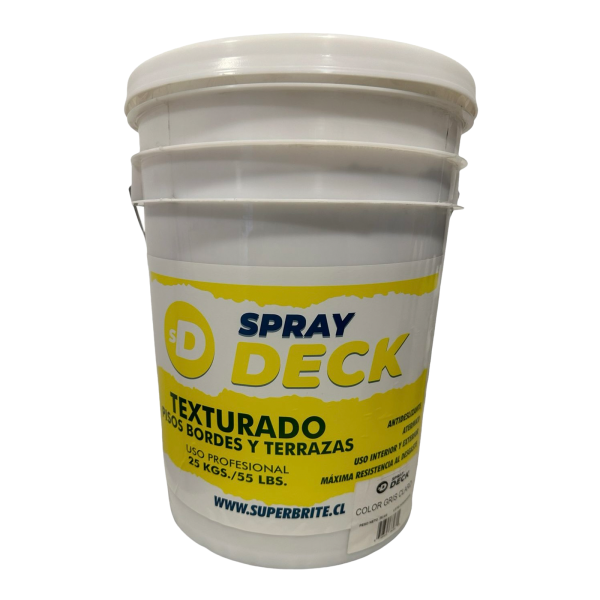
Revestimiento texturado de alta resistencia proyectado a pistola tolva. Ideal para soláriums, cocheras, senderos peatonales y renovación rápida sobre pisos existentes.
| Presentación | Kit Resina Concentrada + Áridos Sílices (20 kg) |
| Rendimiento | 4.0 m² por kit completo |
| Espesor | 3 mm de capa proyectada antideslizante |
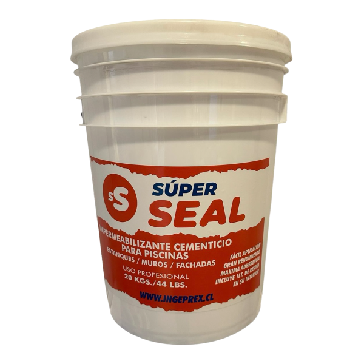
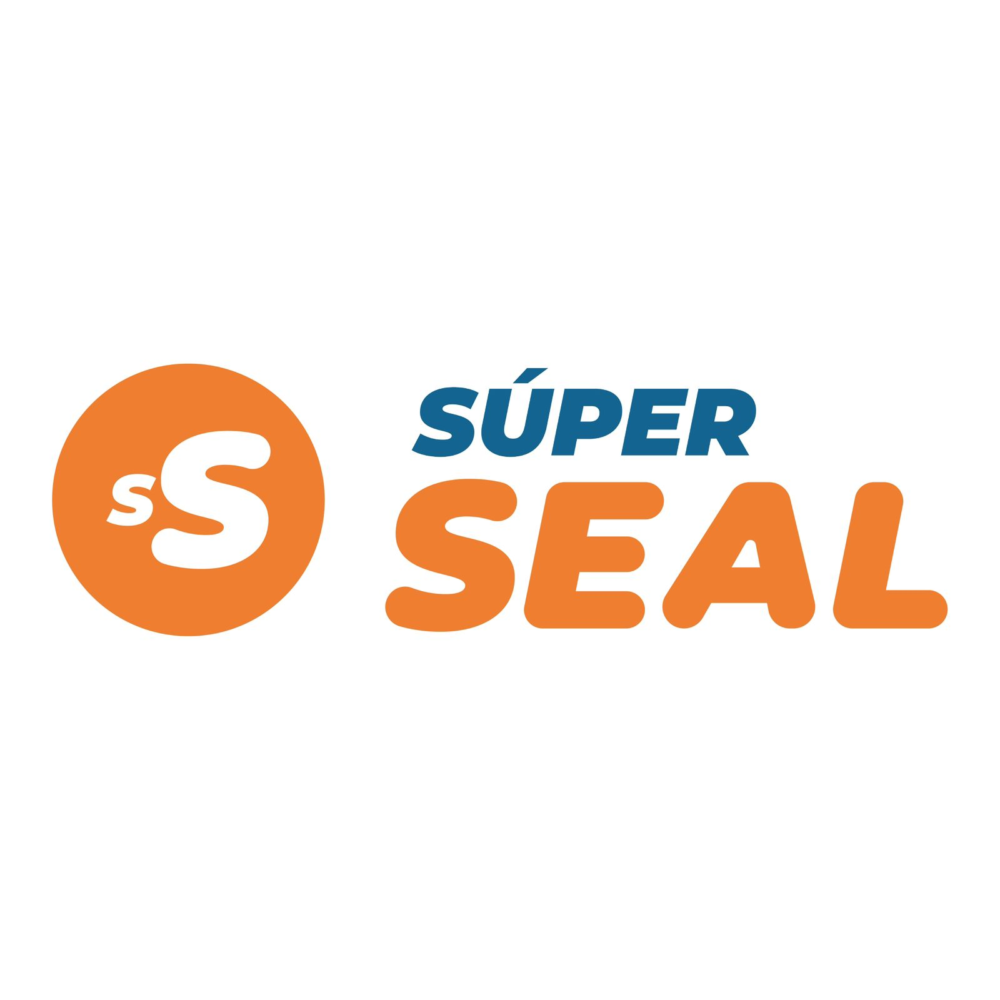
Microcemento ImpermeableRevestimiento continuo e impermeabilizante decorativo para pisos, muros interiores, exteriores y bordes sin juntas de dilatación.
| Presentación | Balde de 20 kg (Incluye 1L Resina) |
| Rendimiento | 5.0 m² por kit completo (2 manos) |
| Propiedades | Superficie continua, 100% impermeable |
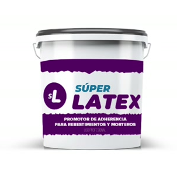
Promotores líquidos concentrados de adherencia, elasticidad e hidrofugado estructural. Aumentan la adherencia mecánica y previenen microfisuras en morteros y estucos de piscinas.
| Presentación | Tineta 5 Galones (19 L) / Balde 1 Galón (3.8 L) |
| Rendimiento / Dilución | Concentrado 1:1 a 1:3 en agua de amasado |
| Propiedades | Alta flexibilidad, máxima adherencia química, protección UV |
| Usos Principales | Estucos para piscinas, puentes de adherencia, lechadas técnicas |
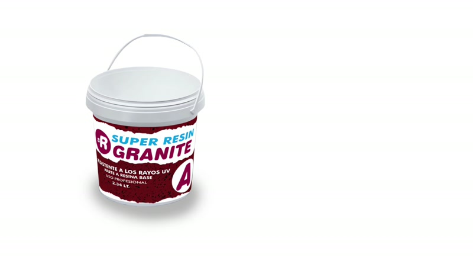
Revestimiento continuo bicomponente de granito natural y resina elástica con filtro UV. Ideal para terrazas, soláriums y bordes exteriores de alta gama resistentes a la intemperie.
| Presentación | Kit Bicomponente (Parte A Resina Base 2.34 L + Parte B Agregados) |
| Rendimiento | 3.5 m² a 4.0 m² por kit completo |
| Protección UV | 100% Resistente a radiación solar directa sin decoloración ni amarilleo |
| Terminación | Granito natural continuo, textura atérmica y antideslizante |
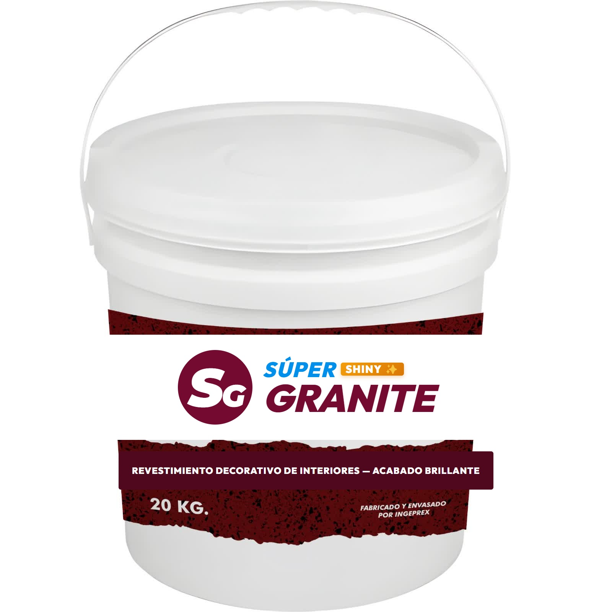
Revestimiento decorativo continuo de interiores con exclusivo acabado brillante y destellos minerales. Diseñado para renovar muros y paredes con alta estética arquitectónica.
| Uso & Destino | Paredes y superficies interiores (muros de acento, livings, recepciones, dormitorios, locales) |
| Superficies Aptas | Yeso, estucos, fibrocemento, pasta muro, OSB, yeso cartón (drywall) y pinturas firmes |
| Carta de Colores | Sky Violet, Rose Pink, Cristal Silver, Graphite y Onix |
| Terminación | Textura continua con acabado brillante reflectivo (efecto Shiny) y suave al tacto |
Descubrí por qué las piscinas modernas reemplazan el gasto del repintado anual por un revestimiento continuo de cristal de cuarzo que dura más de 15 años sin mantenimiento.
Película plástica superficial de corta duración
Se ampolla, descascara y degrada con el cloro y la sal en menos de 12 a 24 meses.
No aporta espesor ni resistencia estructural; cualquier movimiento del hormigón genera grietas.
Se torna porosa, junta verdín en el fondo y mancha la piel por desprendimiento de cal.
Vaciar la piscina, rasquetear, lijar y comprar pintura cada primavera genera un gasto constante.
Revestimiento continuo monolítico de cristal natural
Cristales de cuarzo 99% puro inmunes al cloro, salinizadores y radiación solar extrema.
Integra una capa pétrea impermeable que sella microfisuras y rigidiza el vaso de hormigón.
Llaneado continuo sin aristas cortantes ni juntas; no junta hongos por su nula porosidad.
Se amortiza rápidamente eliminando los costos anuales de vaciado y mano de obra.
Elimina el gasto y trabajo de vaciar y repintar la piscina cada primavera. Durabilidad superior a 10-15 años.
Forma una capa monolítica de 8 a 10 mm que sella microfisuras del hormigón previniendo filtraciones de agua.
Cristales de cuarzo pulidos al tacto para pies descalzos que no acumulan verdín ni hongos por su nula porosidad.
Súper Brite® ofrece mezclas de cristales de cuarzo natural 99% puro seleccionados que reaccionan con la radiación solar generando el reflejo de agua cristalina deseado.
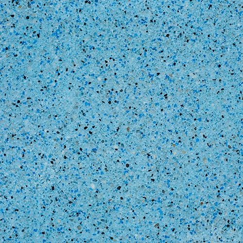
Tonalidad azul profundo con reflejos zafiro de alta intensidad bajo radiación solar directa.
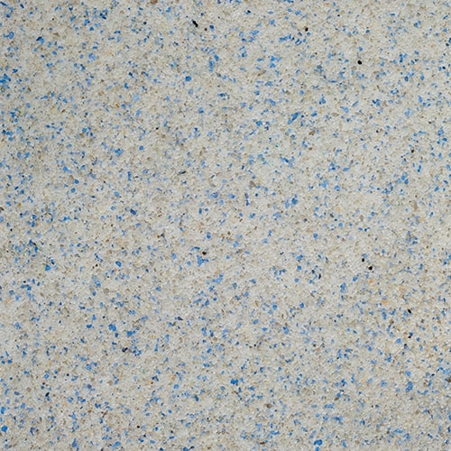
Mezcla celeste cristalina que reproduce el tono turquesa caribeño en aguas poco profundas y soláriums.
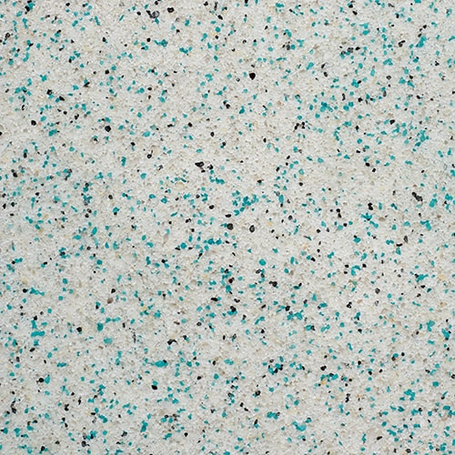
Gradación oceánica vibrante ideal para piscinas de profundidad media y espejos de agua reflectivos.
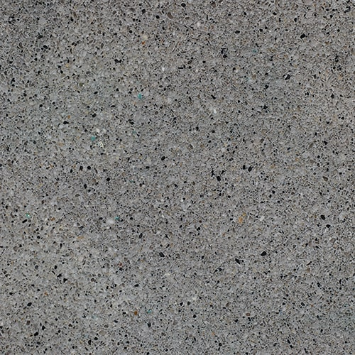
Fórmula arquitectónica contemporánea que genera matices verde esmeralda y máxima elegancia.
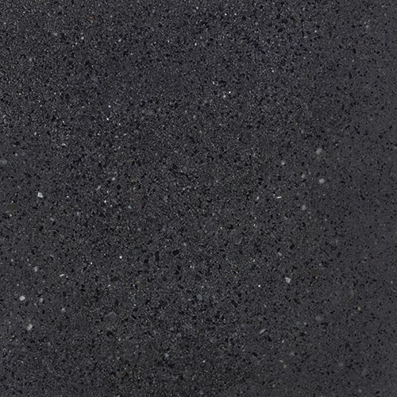
Efecto espejo de agua profundo y sofisticado con absorción térmica natural para mayor confort.
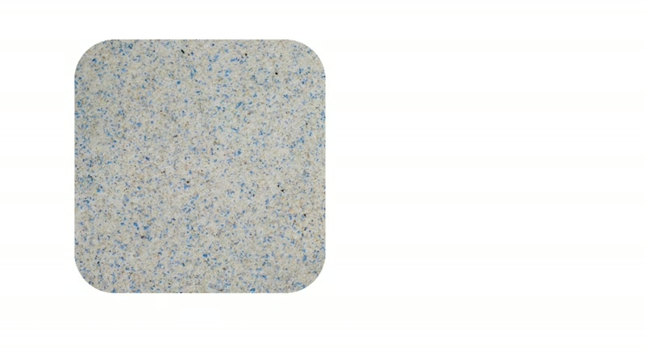
Cristales de cuarzo seleccionados tono arena que emulan playas naturales con reflejos verde caribe.
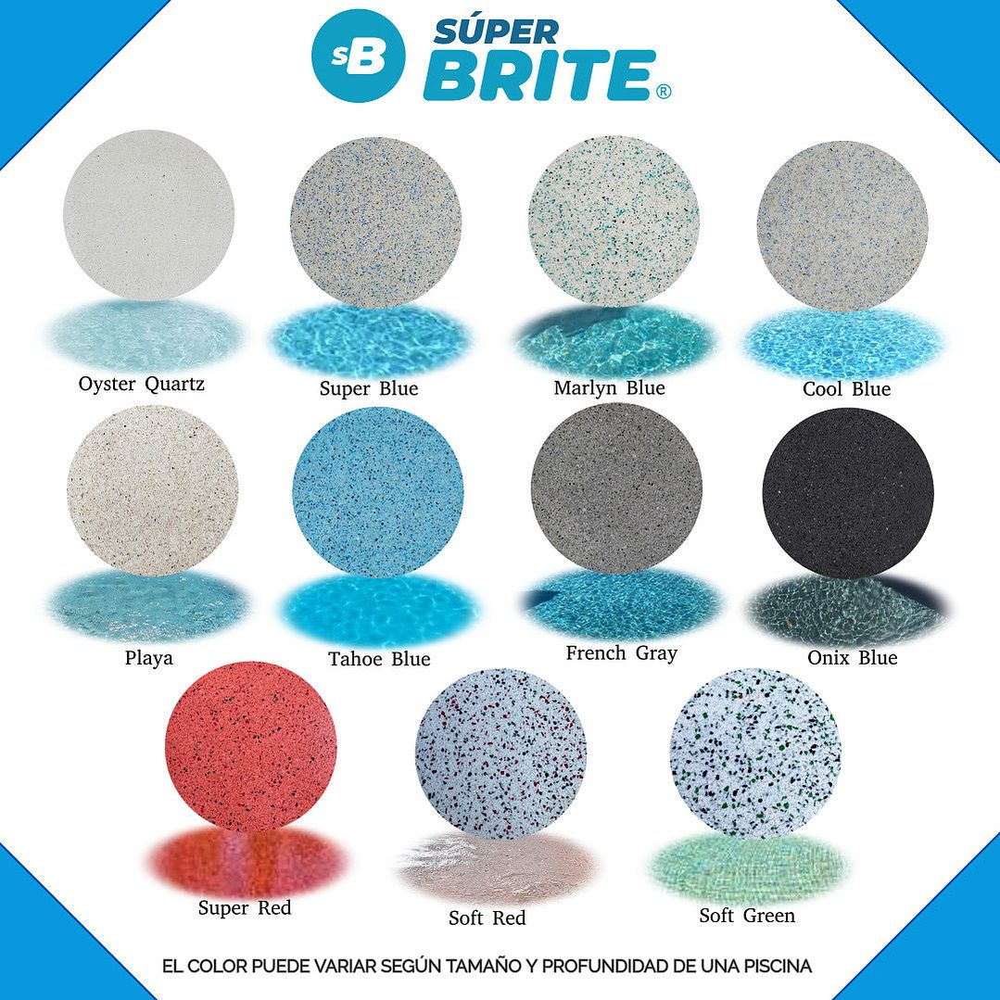
ImpoAcuatiq, como importador y distribuidor oficial exclusivo en el país, dictará las jornadas presenciales de formación técnica y acreditación de aplicadores en los sistemas originales de Ingeprex.
El curso abarca el ciclo completo de aplicación en obra con prácticas reales sobre probetas y vasos de hormigón:
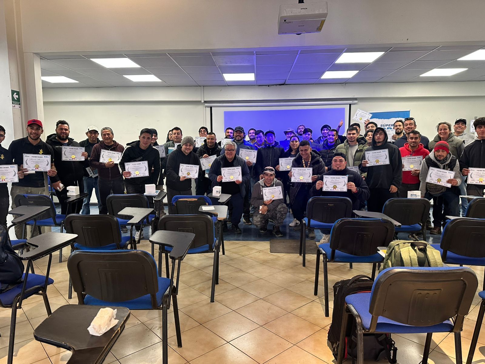
Ingresá las medidas de tu proyecto (piscinas, soláriums, terrazas o muros interiores) para calcular la cantidad exacta de material oficial Ingeprex.
ImpoAcuatiq es el canal oficial exclusivo de abastecimiento mayorista de productos Ingeprex para constructoras, comercios y cuadrillas de aplicación en toda la Argentina.
Especificación de insumos en pliegos de obra y compras directas por volumen o pallet para desarrollos de alta gama.
Sumá las líneas oficiales Súper Brite® e Ingeprex a tu comercio con abastecimiento directo de importador y márgenes preferenciales.
Capacitación práctica en técnicas oficiales de llaneado de cuarzo continuo y homologación técnica oficial de fábrica.
Conocé el trabajo de aplicadores homologados, obras terminadas en todo el país y las jornadas presenciales de certificación técnica Ingeprex.
Canal directo para cotizaciones de obra, incorporación de líneas a comercios, inscripciones a talleres y consultas técnicas oficiales.
Completá el formulario para derivar tu consulta al canal oficial de WhatsApp con atención inmediata de nuestro equipo técnico-comercial.
Resolución rápida a las dudas técnicas y comerciales más habituales sobre los revestimientos cementicios Ingeprex.
ImpoAcuatiq es la empresa importadora y distribuidora oficial exclusiva en la República Argentina de toda la línea de revestimientos y productos formulados por Ingeprex (Chile) (incluyendo Súper Brite®, Súper Kote®, Súper Fullget®, Spray Deck y Súper Seal®). Toda la comercialización mayorista, provisión de insumos directos de fábrica y futuras capacitaciones técnicas presenciales en el país son desarrolladas exclusivamente por ImpoAcuatiq.
Súper Brite® es un revestimiento cementicio monolítico formulado con más del 99% de cuarzo natural seleccionado y polímeros hidrófugos. A diferencia de la pintura tradicional, no se ampolla, no se decolora con el cloro ni requiere repintado anual (vida útil superior a 10 años). Frente a las venecitas, elimina el desprendimiento de pastinas y piezas cortantes, logrando una superficie continua, atérmica y suave al tacto para pies descalzos.
No es indispensable picar la totalidad del vaso si la estructura está firme. Se debe hidrolavar a alta presión para remover restos sueltos de pintura, desengrasar el sustrato y aplicar una capa de anclaje estructural con Súper Kote® (puente de unión bicomponente de alta adherencia). Sobre esa base rugosa se aplica directamente el revestimiento de cuarzo.
El mantenimiento es idéntico al de cualquier piscina de alta gama: mantener el pH entre 7.2 y 7.6, y el cloro libre entre 1 y 3 ppm. La nula porosidad del cuarzo pulido dificulta enormemente la proliferación de algas y hongos, reduciendo el consumo de alguicidas y facilitando el cepillado periódico.
Ofrecemos esquemas de abastecimiento mayorista por pallet cerrado o volumen de obra con despacho directo desde nuestro centro logístico en Rosario a cualquier punto del país. Contactanos vía formulario o WhatsApp con los datos de tu empresa para recibir la lista de precios B2B y condiciones de distribución.
ImpoAcuatiq dictará talleres intensivos teórico-prácticos homologados por Ingeprex en distintas ciudades de Argentina. Al finalizar, los aplicadores reciben su diploma de acreditación técnica presencial oficial emitido por la marca.